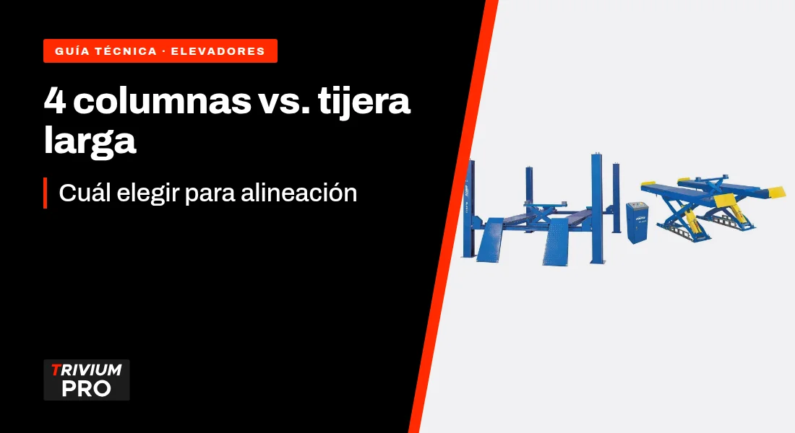

En los talleres mecánicos y centros de alineación, contar con el elevador adecuado es clave para optimizar el espacio, la comodidad del operario y la eficiencia del trabajo. Dos de las opciones más utilizadas son los elevadores de 4 columnas y los elevadores de tijera largos. A continuación, analizamos sus ventajas y desventajas para ayudarte a tomar la mejor decisión.
Elevador de 4 Columnas
Ventajas:
- Mayor capacidad de carga: Ideal para vehículos pesados, SUVs y camionetas.
- Estabilidad y seguridad: Al tener cuatro puntos de apoyo, ofrece un soporte firme y seguro.
- Fácil acceso al tren delantero y trasero: Permite trabajar cómodamente en la alineación y otros servicios.
- Sin necesidad de embutirlo: Se instala sobre el piso sin obras adicionales.
Desventajas:
- Mayor ocupación de espacio: Su tamaño es considerable, lo que puede limitar la distribución en talleres con espacio reducido.
- Estética más robusta: A diferencia del elevador de tijera, su estructura es más visible y ocupa más espacio visual.
- Mayor tiempo de elevación: Suele ser un poco más lento en comparación con el elevador de tijera.
Elevador de Tijera Largo
Ventajas:
- Ocupa menos espacio: Al ser más compacto y no tener columnas, optimiza la distribución del taller.
- Mayor comodidad para el operario: No hay columnas que obstaculicen el acceso a la zona de alineación.
- Más estético y moderno: Su diseño es más limpio y armonioso con el entorno del taller.
- Puede embutirse en el piso: Esto permite que quede al ras del suelo cuando está bajado, facilitando el acceso y mejorando la seguridad.
Desventajas:
- Mayor costo: Suele ser más caro que un elevador de 4 columnas.
- Requiere obra para embutirlo: Si se instala al ras del suelo, se necesita una fosa, lo que puede reducir la altura útil dependiendo de la profundidad del embutido.
- Menor capacidad de carga en algunos modelos: Aunque hay modelos robustos, algunos tienen menor capacidad que un elevador de 4 columnas.
Conclusión
La elección entre un elevador de 4 columnas y un elevador de tijera largo dependerá de las necesidades específicas del taller. Si se busca estabilidad, capacidad de carga y un equipo sin necesidad de obra civil, el elevador de 4 columnas es una excelente opción. En cambio, si se prioriza el espacio, la estética y la comodidad operativa, el elevador de tijera largo, especialmente embutido, es la alternativa ideal.
En Trivium Center ofrecemos ambas opciones para que encuentres la solución que mejor se adapte a tu negocio. ¡Consultanos para más información!